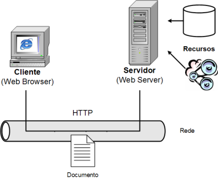
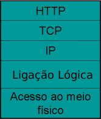

A World Wide Web (WWW) é a principal aplicação da Internet. A arquitectura é constituída por:

Na Web tudo é um documento. Este modelo é poderoso pela sua simplicidade, pois um documento pode conter diferentes tipos de informação: texto, imagem, som, etc. Todos são referenciados da mesma forma.
A "teia" que deu nome à Web é formada pelas referências (hyperlinks) designadas por Uniform Resource Identifiers (URIs) que ligam os documentos uns aos outros.
Os URIs podem ter um de dois tipos: URL e URN.
Os Uniform Resource Locators (URLs) são referências que incluem informação sobre como e onde aceder ao documento. Por exemplo, o URL seguinte é o endereço da página inicial da Universidade Lusófona.
http://ulusofona.pt/
Os Uniform Resource Name (URNs) são referências globalmente únicas, independentes da localização e persistentes. Por exemplo, o URN seguinte usa o International Standard Book Number (ISBN) de um livro.
urn:isbn:0-13-349945-6
O protocolo de comunicação entre clientes e servidores utilizado na Web é o HyperText Transfer Protocol (HTTP). O HTTP permite transferir documentos na Web entre cliente e servidor, e usa TCP/IP para garantir um canal de comunicação fiável.

O HTTP é um protocolo de pedido-resposta.
Os pedidos e as respostas têm duas secções: cabeçalho e corpo.
O separador de ambos é uma linha em branco.
Os cabeçalhos são linhas de texto com informação sobre o pedido.
O corpo é binário e pode transportar qualquer conteúdo.
Alguns pedidos HTTP:
Alguns códigos de resposta HTTP:
O exemplo seguinte mostra o que passa na rede quando é feito um pedido HTTP.
Pedido:
GET / HTTP/1.1 Accept: image/gif, image/x-bitmap, image/jpeg, application/x-shockwave-flash, application/vnd.ms-excel, application/vnd.ms-powerpoint, application/msword, */* Accept-Language: en-us UA-CPU: x86 Accept-Encoding: gzip, deflate User-Agent: Mozilla/4.0 (compatible; MSIE 7.0; Windows NT 5.1; .NET CLR 1.1.4322; .NET CLR 2.0.50727; InfoPath.1; IEMB3; IEMB3) Host: www.ist.utl.pt Proxy-Connection: Keep-Alive Cookie: __utmc=12105388
Resposta (encurtada):
HTTP/1.1 200 OK Date: Wed, 07 Mar 2007 18:28:00 GMT Server: Apache/2.0.53 (Debian GNU/Linux) PHP/4.3.10-18 X-Powered-By: PHP/4.3.10-18 Transfer-Encoding: chunked Content-Type: text/html
© Docentes de Computação Distribuída, Dep. Eng. Informática, Universidade Lusófona